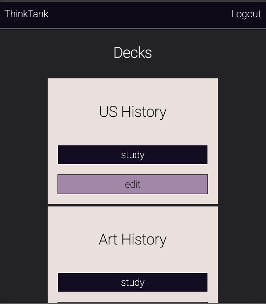

Projects
ThinkTank
A full-stack platform for creating and studying flashcards. Users can create an account and save, edit or delete unlimited decks of flashcards. I have wanted to build an app like this ever since I used a similar application to learn spanish a few years ago. The convenience of digital flashcards and the ability to edit cards as needed made a huge impact on learning speed and retention. ThinkTank would be ideal for students but was created for anyone with a passion for learning.
Created with: React, Node.js, Express.js, Knex, Mocha, Chai, RESTful API Endpoints, JWT, PostgresSQL
site repoShower Thoughts
A full-stack social media platform dedicated to "shower thoughts" - brief, often funny and insightful observations about life. "Shower thoughts" is a popular hashtag across social media and also a dedicated subreddit. I wanted to create a social media site where data from the user communtity was kept anonymous and could be used with without creating a login/password, which is something I haven't seen on a social media platform. The app allows users to post shower thoughts as well as "like" other posts from the community. By saving a unique Id in the device local storage, users can access all the features of the site, including seeing their own archived posts without creating an account.
Created with: React, Node.js, Express.js, Knex, Mocha, Chai, RESTful API Endpoints, PostgresSQL
site repoLightHouse
A marine weather app, showing conditions in Tampa Bay waters. Users can search conditions at specific times in order to track how weather conditions might change through out their trip on the water. The idea for LightHouse developed after speaking with friends who uses weather apps to plan sailing trips. The common refrain was that these apps had a cumbersome user experience that were difficult to use and understand. LightHouse was built to create a simple and useful way to get the necessary and relevant information needed for a safe and happy experience on the water. This app would be ideal for sailing, surfing, or any watersport.
Built using the Storm Glass API. HTML , CSS , JavaScript , jQuery
site repo